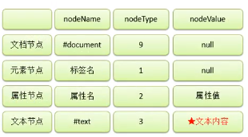

基本操作
节点：
节点Node是构成网页最基本的组成部分，网页中的每个部分都可以称为节点。
比如html标签、属性、文本、注释、整个文档等都是节点，他们的具体类型不同。
- 文档节点：整个HTML文档
- 元素节点：HTML文档中的标签
- 属性节点：元素的属性
- 文本节点：HTML标签中的文本内容

常用DOM属性
window.onload：
window的onload事件将会在页面加载完成之后执行，这样确保我们的代码执行时所有的DOM对象已经加载完毕。
window.onload = function(){
var btn = document.getElementById("btn");
btn.onclick = function(){
alert("hello");
}
}
document：
浏览器已提供文档节点对象，这个对象是window对象的属性document，可以直接在页面中使用，文档节点代表整个网页。
- document.body：获取body元素
- document.documentElement：保存的是html根标签
- document.all：获取html所有元素
- var all = docment.getElementsByTagName("*")：获取html所有元素
获取元素节点：
- getElementById() 返回对拥有指定 id 的第一个对象的引用。
- getElementsByName() 返回带有指定名称（name属性）的对象集合。
- getElementsByTagName() 返回带有指定标签名<标签名>的对象集合。
- getElementsByClassName：根据class属性值获取一组元素节点对象（IE9以上版本才能用）
- document.querySelector(".box1 div")：根据CSS选择器查询一个元素节点对象，
如果选择器选中了多个元素，只会返回其中第一个（支持IE8以上）
- document.querySelectorAll(".box1 div")：根据CSS选择器查询一组元素节点对象，
即使符合条件的元素只有一个，也会返回数组
获取元素节点属性：
元素对象.属性名
- innerHTML：获取元素内部的HTML代码
- innerText：获取元素内部的文本内容，和innerHTML类似，不同的是它会自动 将html去除
- className：获取元素的class属性
- childNodes：获取当前节点的所有子节点，包括本文节点，标签与标签之间空白也会当成文本节点
- children：获取当前节点的所有子元素（子标签），不包括本文节点
- firstChild：表示当前节点的第一个子节点
- firstElementChild：获取当前元素的的第一个子元素标签。（IE8以上）
- lastChild：表示当前节点的最后一个子节点
- parentNode：表示当前节点的父节点
- previousSlibling：表示当前节点的前一个兄弟节点
- previousElementSlibling：表示当前节点的前一个兄弟元素（IE8以上）
- nextSlibling：表示当前节点的后一个兄弟节点
DOM增删改：
ducoment对象有一系类方法用于操作Dom的增删改：
- createElement()：创建元素节点
- createTextNode()：创建文本节点
- createAttribute()：创建属性节点
- appendChild()：把新的子节点添加到指定节点
- insertBefore()：在指定的子节点前面插入新的子节点
- removeChild()：删除子节点
- replaceChild()：替换子节点
- getAttribute()：返回指定的属性值
- setAttribute()：把指定属性设置或修改为指定的值
索引问题：
for循环在页面加载完之后立即执行，响应函数在点击时才执行，导致函数响应时，for循环已经执行完毕，
索引已经变成最大值了
CSS操作
读取CSS内联样式：
通过js获取元素的样式，使用 “元素.style.样式名”。通过style属性
读取和设置的样式都是内联样式，无法读取样式表中的样式。
修改CSS内联样式：
通过js修改元素的样式（内联样式），使用 “元素.style.样式名 = 样式值”。
如果CSS样式名中含有-，比如background-color，需要将这种样式名
改为驼峰命名法（去掉-，然后将-后的字母大写）。
通过style属性设置的样式都是内联样式，内联样式有较高的优先级，
所以通过js修改的样式会立即显示。但是如果央视中写了!important，
则会导致js修改样式失效，所以尽量不要为样式添加!important
box1.style.width = "300px";
box1.style.height = "300px";
box1.style.backgroundColor = "yellow";
currentStyle读取当前显示的样式(只有IE浏览器支持)：
通过元素的style属性只能操作内联样式；可以通过“currentStyle.样式名”
读取当前元素正在显示的样式，如果当前元素没有设置该样式，会读取他的默认值。
alert(box1.currentStyle.width);
alert(box1.currentStyle.backgroundColor);
getComputedStyle()(获取元素当前样式)：
currentStyle只有IE浏览器支持，可用getComputedStyle()代替，该方法是window的方法（但是IE8中没有）
<!--getComputedStyle(要获取样式的元素, 可以传一个伪元素，一般传null)-->
var obj = getComputedStyle(box1, null);
alert(obj.width);
<!--兼容问题-->
//正常浏览器的方式
alert(getComputedStyle(box1, null).width);
//IE8的方式
alert(box1.currentStyle.width);
/**
* 定义一个函数，用来获取指定元素的当前样式
* 参数：obj 要获取样式的元素
* name 要获取的样式名
*/
function getStyle(obj, name){
if(window.getComputedStyle){
//正常浏览器的方式，具有getComputedStyle()方法
return getComputedStyle(obj, null)[name];
}else{
//IE8的方式，没有getComputedStyle()方法
return obj.currentStyle[name];
}
}
其他样式相关的属性：
元素对象.属性名
- clientWidth、clientHeight：获取元素可见宽度和高度，包括内容去和内边距，只读，直接返回数字不带px
- offsetWidth、offsetHeight：获取元素整个宽高，包括内容区、内边距和边框
- offsetParent：获取当前元素的定位父元素，它会获取到离当前元素最近的开启了定位的（style="position:relative"）祖先元素,
如果没有开启的祖先元素则返回body
- offsetLeft：当前元素相对于其定位父元素的水平偏移量
- offsetTop：当前元素相对于其定位父元素的垂直偏移量
- scrollWidth、scrollHeight：可以获取元素整个滚动区域的宽度和高度
- scrollLeft、scrollTop：获取滚动条水平、垂直滚动距离
注意：
- 当满足scrollHeight-scrollTop == clientHeight说明垂直滚动条滚动到底了
- 当满足scrollWidth-scrollLeft == clientWidth说明水平滚动条滚动到底了
事件对象：
当事件的响应函数被触发时，浏览器每次都会将一个事件对象作为实参传递给响应函数。
事件对象中封装了事件相关的一切信息，比如鼠标的坐标、键盘按下的键、鼠标滚轮滚动方向等。。。
在IE8及以下的浏览器中，响应事件函数被触发时，浏览器不会传递事件对象
作为函数实参，而是将事件对象作为window对象的属性保存的
- onabort 图像加载被中断
- onblur 元素失去焦点
- onchange 用户改变域的内容
- onclick 鼠标点击某个对象
- ondblclick 鼠标双击某个对象
- onerror 当加载文档或图像时发生某个错误
- onfocus 元素获得焦点
- onkeydown 某个键盘的键被按下
- onkeypress 某个键盘的键被按下或按住
- onkeyup 某个键盘的键被松开
- onload 某个页面或图像被完成加载
- onmousedown 某个鼠标按键被按下
- onmousemove 鼠标被移动
- onmouseout 鼠标从某元素移开
- onmouseover 鼠标被移到某元素之上
- onmouseup 某个鼠标按键被松开
- onreset 重置按钮被点击
- onresize 窗口或框架被调整尺寸
- onselect 文本被选定
- onsubmit 提交按钮被点击
- onunload 用户退出页面
var areaDiv = document.getElementById("areaDiv");
//当鼠标再div区域移动时，会触发此函数，并将事件对象传过来
areaDiv.onmousemove = function(event){
//兼容IE8及以下浏览器，需要使用window.event
if(!event)
event = window.event;
event = event || window.event;
//获取鼠标指针的坐标
var x = event.clientx;
var y = event.clienty;
}
<!--示例：div跟随鼠标移动-->
document.onmousemove = function(event){
//解决IE8及以下兼容问题
event = event || window.event;
//获取滚动条滚动距离
//chrome认为浏览器的滚动条时body的，可通过body.scrollTop来获取
//火狐等浏览器认为滚动条是html的
var st = document.body.scrollTop || document.documentElement.scrollTop;
var sl = document.body.scrollLeft || document.documentElement.scrollLeft;
//获取鼠标的坐标
//clientX、clientY时鼠标在当前可见窗口的坐标，div的偏移量是相对于整个页面的
//pageX、pageY可以获取鼠标相对于当前页面的坐标，但这两个属性在IE8中不支持
var left = event.clientX;
var top = event.clientY;
//设置div偏移量
box1.style.left = left + sl +"px";
box1.style.top = top + st +"px";
}
<!--示例2：鼠标拖拽-->
box1.onmousedown = function(event){
//设置box1捕获所有鼠标按下的事件，这个方法只有IE支持
if(box1.setCapture)
box1.setCapture();
box1.setCapture && box1.setCapture();
event = event || window.event;
//鼠标在div上的偏移量
var ol = event.clientX - box1.offsetLeft;
var ot = event.clientY - box1.offsetTop;
document.onmousemove = function(event){
event = event || window.event;
var left = event.clientX - ol;
var top = event.clientY - ot;
//设置div偏移量
box1.style.left = left +"px";
box1.style.top = top + "px";
}
document.onmouseup = function(event){
document.onmousemove = null;
document.onmouseup = null;
box1.releaseCapture && box1.releaseCapture();
}
//取消浏览器默认的拖拽元素时搜索的功能，但是IE8不起作用，用事件捕获box1.setCapture()
return false;
}
<!--示例3：鼠标滚动-->
//onmousewheel鼠标滚轮滚动事件会在滚轮滚动时触发，但是火狐不支持该属性
box1.onmousewheel = function(event){
event = event || window.event;
//event.wheelDelta获取鼠标滚动方向，120向上滚，-120向下滚，只看正负不看大小
//火狐中不支持wheelDelta，火狐使用event.detail来获取滚动的方向，向上-3，向下3
if(event.wheelDelta>0 || event.detail < 0){
//向上滚,box1变短
box1.style.height = box1.clientHeight - 10 + "px";
}else{
//向下滚,box1变长
box1.style.height = box1.clientHeight + 10 + "px";
}
//使用addEventListener()方法绑定响应函数取消默认行为不能return false;
//需要使用event.preventDefault()来取消;但是IE8不支持,需要做判断
event.preventDefault && event.preventDefault();
//滚轮滚动时,如果浏览器有滚动条,滚动条会随之滚动,这是浏览器默认行为,如果不希望发生可以返回false取消
return false;
}
//在火狐中需要使用DOMMouseScroll来绑定滚动事件，该事件需要通过addEventListener()函数来绑定
bind(box1, "DOMMouseScroll", box1.onmousewheel);
<!--示例4：键盘事件-->
/**
* 键盘事件一般都会绑定给一些可以获取到焦点的对象，或者document对象
*/
document.onkeydown = function(event){
event = event || window.event;
//通过keyCode来获取按键的编码
if(event.keyCode === 89){
console.log("y被按下了");
}
/**
* altKey 返回当事件被触发时，"ALT" 是否被按下。
* ctrlKey 返回当事件被触发时，"CTRL" 键是否被按下。
* shiftKey 返回当事件被触发时，"SHIFT" 键是否被按下。
*/
if(event.keyCode === 89 && event.altKey){
console.log("alt和y都被按下了");
}
}
var input = document.getElementsByTagName("input")[0];
input.onkeydown = function(){
//使文本框不能输入数字(48-57)
//在文本框中输入内容是浏览器默认行为，如果要取消，返回false
if(event.keyCode >= 48 && event.keyCode<=57){
return false;
}
}
事件冒泡（Bubble）：
就是事件的向上传导，当后代元素上的事件被触发时，其祖先元素的相同事件也会被触发。
在开发中，大部分冒泡都是有用的；如果不希望发生事件冒泡可以通过事件对象来取消冒泡。
span1.onclick = function(event){
event = event || window.event;
//处理事件
//取消冒泡（事件被取消了），父元素及祖先元素将处理不到事件
event.cancleBubble = true;
}
事件的委派：
将事件统一绑定给元素的共同祖先元素，当后代元素上的事件触发时，会
冒泡到祖先元素上，从而通过祖先元素的响应事件。事件委派可减少事件
绑定的次数，提高程序性能，但是带来一个问题，不管点击那个子元素都会得到一样
的响应。可通过event对象的target属性获取到触发此事件的元素（事件的目标节点）。
//将事件绑定在li的父元素ul上，实现事件委派
ul.onclick = function(event){
event = event || window.event;
//获取出发事件的对象
if(event.target.className == "link"){
alert(event.target.innerText+"我触发了事件");
}
}
事件的绑定：
通过“元素.onclick = function(){}”只能为元素绑定一个事件，如果重复绑定
将会覆盖前面绑定的事件。可以通过addEventListener()为元素绑定事件监听。
IE8及以下浏览器不支持此方法，可通过attachEvent()来绑定事件，后绑定先执行。
//添加事件监听，参数（事件字符串去掉on、回调函数、 是否在捕获阶段触发事件，一般传false）
//大部分浏览器
btn01.addEventListener("click", function(){
//this代表绑定事件的元素
}, false);
//IE8及以下浏览器
btn01.attachEvent("onclick", function(){
//this代表window
};
/**
* 定义一个函数，用来为指定元素绑定响应函数
* 参数：obj 需要绑定事件的元素
* eventStr 事件字符串不要on
* callback 回调函数
*/
function bind(obj, eventStr, callback){
if(obj.addEventListener){
obj.addEventListener(eventStr, callback, false);
}else{
obj.attachEvent("on"+eventStr, function(){
//在匿名函数种调用回调函数，this是谁由调用方式决定，解决this代表window的问题
callback.call(obj);
});
}
}
事件的传播：
微软认为事件应该是由内向外传播（冒泡）子元素先触发；
网景认为事件应该是由外向内传播，祖先元素先触发。
W3C综合两个公司方案，将事件传播分为三个阶段：
- 捕获阶段（IE8及以下浏览器中没有捕获阶段）：在捕获阶段是从最外层祖先元素向目标元素进行事件的捕获，但默认此时不会触发事件
- 目标阶段：事件捕获到目标元素，捕获结束开始在目标元素上触发事件
- 冒泡阶段：事件从目标元素向祖先元素传递，一次触发祖先元素上的事件
如果希望在捕获阶段就触发事件（祖先元素先触发），可以将addEventListener()的第三个参数设置为true